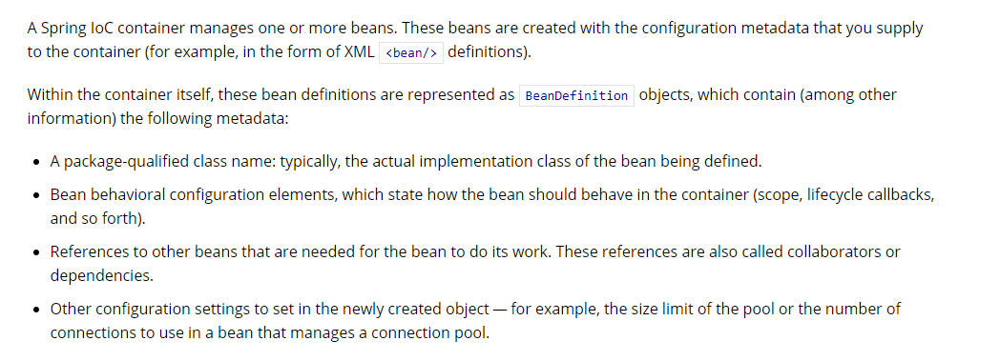
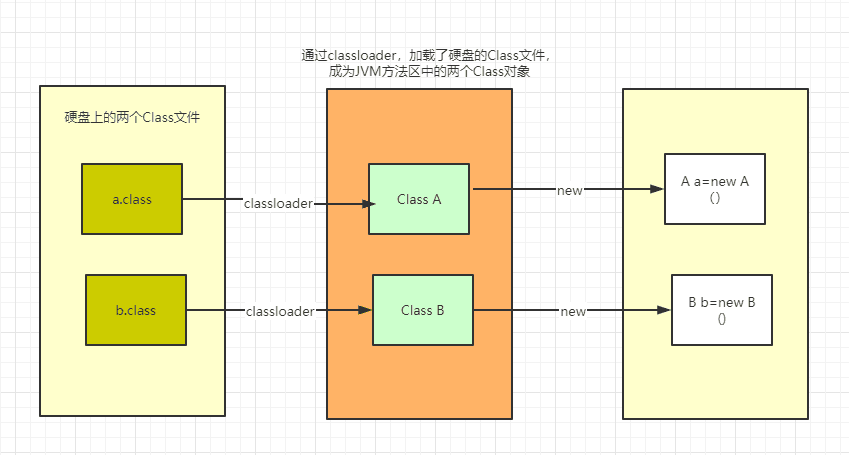
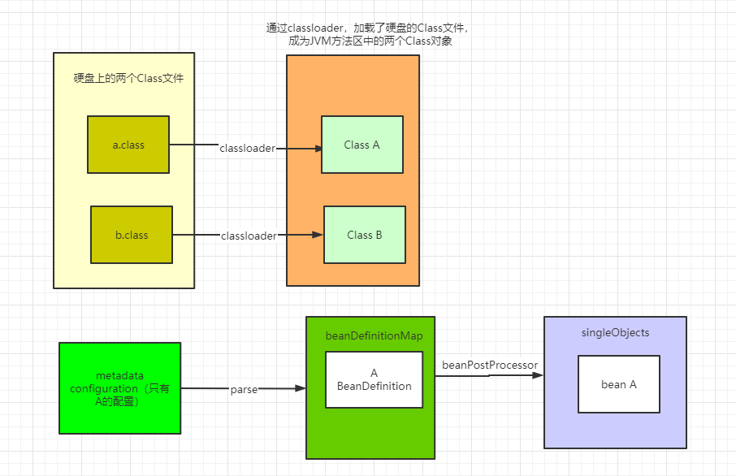
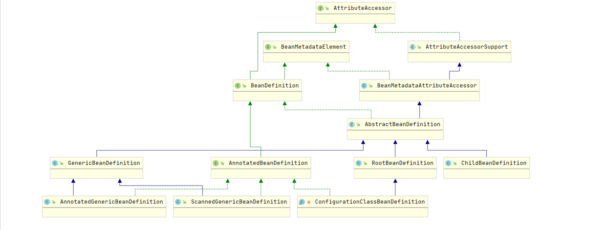
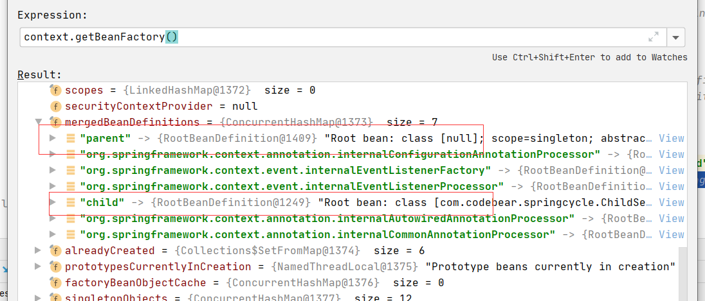
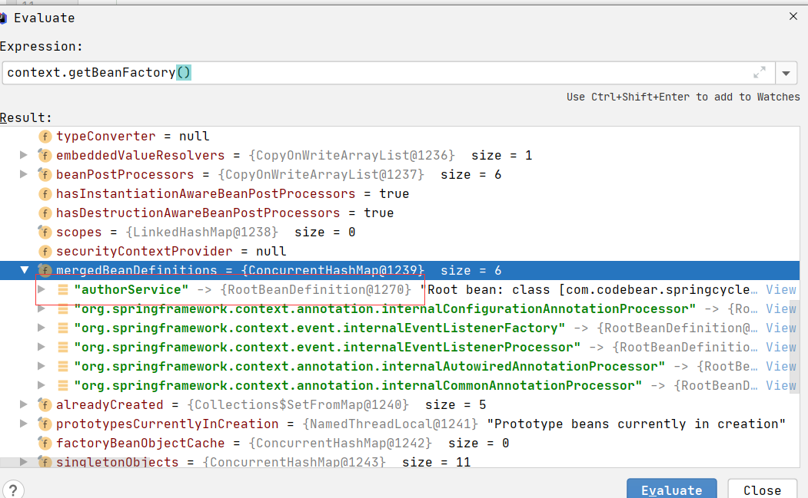

- AQS 万字图文全面解析.md.html
- Docker 镜像构建原理及源码分析.md.html
- ElasticSearch 小白从入门到精通.md.html
- JVM CPU Profiler技术原理及源码深度解析.md.html
- JVM 垃圾收集器.md.html
- JVM 面试的 30 个知识点.md.html
- Java IO 体系、线程模型大总结.md.html
- Java NIO浅析.md.html
- Java 面试题集锦（网络篇）.md.html
- Java-直接内存 DirectMemory 详解.md.html
- Java中9种常见的CMS GC问题分析与解决（上）.md.html
- Java中9种常见的CMS GC问题分析与解决（下）.md.html
- Java中的SPI.md.html
- Java中的ThreadLocal.md.html
- Java线程池实现原理及其在美团业务中的实践.md.html
- Java魔法类：Unsafe应用解析.md.html
- Kafka 源码阅读笔记.md.html
- Kafka、ActiveMQ、RabbitMQ、RocketMQ 区别以及高可用原理.md.html
- MySQL · 引擎特性 · InnoDB Buffer Pool.md.html
- MySQL · 引擎特性 · InnoDB IO子系统.md.html
- MySQL · 引擎特性 · InnoDB 事务系统.md.html
- MySQL · 引擎特性 · InnoDB 同步机制.md.html
- MySQL · 引擎特性 · InnoDB 数据页解析.md.html
- MySQL · 引擎特性 · InnoDB崩溃恢复.md.html
- MySQL · 引擎特性 · 临时表那些事儿.md.html
- MySQL 主从复制 半同步复制.md.html
- MySQL 主从复制 基于GTID复制.md.html
- MySQL 主从复制.md.html
- MySQL 事务日志(redo log和undo log).md.html
- MySQL 亿级别数据迁移实战代码分享.md.html
- MySQL 从一条数据说起-InnoDB行存储数据结构.md.html
- MySQL 地基基础：事务和锁的面纱.md.html
- MySQL 地基基础：数据字典.md.html
- MySQL 地基基础：数据库字符集.md.html
- MySQL 性能优化：碎片整理.md.html
- MySQL 故障诊断：一个 ALTER TALBE 执行了很久，你慌不慌？.md.html
- MySQL 故障诊断：如何在日志中轻松定位大事务.md.html
- MySQL 故障诊断：教你快速定位加锁的 SQL.md.html
- MySQL 日志详解.md.html
- MySQL 的半同步是什么？.md.html
- MySQL中的事务和MVCC.md.html
- MySQL事务_事务隔离级别详解.md.html
- MySQL优化：优化 select count().md.html
- MySQL共享锁、排他锁、悲观锁、乐观锁.md.html
- MySQL的MVCC（多版本并发控制）.md.html
- QingStor 对象存储架构设计及最佳实践.md.html
- RocketMQ 面试题集锦.md.html
- SnowFlake 雪花算法生成分布式 ID.md.html
- Spring Boot 2.x 结合 k8s 实现分布式微服务架构.md.html
- Spring Boot 教程：如何开发一个 starter.md.html
- Spring MVC 原理.md.html
- Spring MyBatis和Spring整合的奥秘.md.html
- Spring 帮助你更好的理解Spring循环依赖.md.html
- Spring 循环依赖及解决方式.md.html
- Spring中眼花缭乱的BeanDefinition.md.html
- Vert.x 基础入门.md.html
- eBay 的 Elasticsearch 性能调优实践.md.html
- 不可不说的Java“锁”事.md.html
- 互联网并发限流实战.md.html
- 从ReentrantLock的实现看AQS的原理及应用.md.html
- 从SpringCloud开始，聊微服务架构.md.html
- 全面了解 JDK 线程池实现原理.md.html
- 分布式一致性理论与算法.md.html
- 分布式一致性算法 Raft.md.html
- 分布式唯一 ID 解析.md.html
- 分布式链路追踪：集群管理设计.md.html
- 动态代理种类及原理，你知道多少？.md.html
- 响应式架构与 RxJava 在有赞零售的实践.md.html
- 大数据算法——布隆过滤器.md.html
- 如何优雅地记录操作日志？.md.html
- 如何设计一个亿级消息量的 IM 系统.md.html
- 异步网络模型.md.html
- 当我们在讨论CQRS时，我们在讨论些神马？.md.html
- 彻底理解 MySQL 的索引机制.md.html
- 最全的 116 道 Redis 面试题解答.md.html
- 有赞权限系统(SAM).md.html
- 有赞零售中台建设方法的探索与实践.md.html
- 服务注册与发现原理剖析（Eureka、Zookeeper、Nacos）.md.html
- 深入浅出Cache.md.html
- 深入理解 MySQL 底层实现.md.html
- 漫画讲解 git rebase VS git merge.md.html
- 生成浏览器唯一稳定 ID 的探索.md.html
- 缓存 如何保证缓存与数据库的双写一致性？.md.html
- 网易严选怎么做全链路监控的？.md.html
- 美团万亿级 KV 存储架构与实践.md.html
- 美团点评Kubernetes集群管理实践.md.html
- 美团百亿规模API网关服务Shepherd的设计与实现.md.html
- 解读《阿里巴巴 Java 开发手册》背后的思考.md.html
- 认识 MySQL 和 Redis 的数据一致性问题.md.html
- 进阶：Dockerfile 高阶使用指南及镜像优化.md.html
- 铁总在用的高性能分布式缓存计算框架 Geode.md.html
- 阿里云PolarDB及其共享存储PolarFS技术实现分析（上）.md.html
- 阿里云PolarDB及其共享存储PolarFS技术实现分析（下）.md.html
- 面试最常被问的 Java 后端题.md.html
- 领域驱动设计在互联网业务开发中的实践.md.html
- 领域驱动设计的菱形对称架构.md.html
- 高效构建 Docker 镜像的最佳实践.md.html
Spring中眼花缭乱的BeanDefinition
引入主题
为什么要读Spring源码，有的人为了学习Spring中的先进思想，也有的人是为了更好的理解设计模式，当然也有很大一部分小伙伴是为了应付面试，Spring Bean的生命周期啦，Spring AOP的原理啦，Spring IoC的原理啦，应付面试，看几篇博客，对照着看看源码，应该就没什么问题了，但是如果想真正的玩懂Spring，需要花的时间真的很多，需要你沉下心，从最基础的看起，今天我们就来看看Spring中的基础——BeanDefinition。
什么是BeanDefinition
 Spring官网中有详细的说明，我们来翻译下： SpringIoc容器管理一个Bean或多个Bean，这些Bean通过我们提供给容器的配置元数据被创建出来（例如，在xml中的定义） 在容器中，这些Bean的定义用BeanDefinition对象来表示，包含以下元数据：
- 全限定类名， 通常是Bean的实际实现类；
- Bean行为配置元素，它们说明Bean在容器中的行为（作用域、生命周期回调等等）；
- Bean执行工作所需要的的其他Bean的引用，这些Bean也称为协作者或依赖项；
- 其他配置信息，例如，管理连接池的bean中，限制池的大小或者使用的连接的数量。
Spring官网中对BeanDefinition的解释还是很详细的，但是不是那么通俗易懂，其实BeanDefinition是比较容易解释的：BeanDefinition就是用来描述一个Bean或者BeanDefinition就是Bean的定义。
创建一个Java Bean，大概是下面这个酱紫：  我们写的Java文件，会编译为Class文件，运行程序，类加载器会加载Class文件，放入JVM的方法区，我们就可以愉快的new对象了。
创建一个Spring Bean，大概是下面这个酱紫：  我们写的Java文件，会编译为Class文件，运行程序，类加载器会加载Class文件，放入JVM的方法区，这一步还是保持不变（当然这个也没办法变。。。） 下面就是Spring的事情了，Spring会解析我们的配置类（配置文件），假设现在只配置了A，解析后，Spring会把A的BeanDefinition放到一个map中去，随后，由一个一个的BeanPostProcessor进行加工，最终把经历了完整的Spring生命周期的Bean放入了singleObjects。
BeanDefinition类图鸟瞰
 大家可以看到，Spring中BeanDefinition的类图还是相当复杂的，我刚开始读Spring源码的时候，觉得BeanDefinition应该是一个特别简单的东西，但是后面发觉并不是那么回事。
下面我将对涉及到的类逐个进行解读。
AttributeAccessor
AttributeAccessor是一个接口：
/**
* Interface defining a generic contract for attaching and accessing metadata
* to/from arbitrary objects.
*
* @author Rob Harrop
* @since 2.0
*/
public interface AttributeAccessor {
void setAttribute(String name, @Nullable Object value);
Object getAttribute(String name);
Object removeAttribute(String name);
boolean hasAttribute(String name);
String[] attributeNames();
}
我们来看下类上面的注释：接口定义了通用的方法来保存或者读取元数据。既然是接口，那么一定会有实现类，我们先把这个放一边。
BeanMetadataElement
BeanMetadataElement也是一个接口，里面只定义了一个方法：
/**
* Interface to be implemented by bean metadata elements
* that carry a configuration source object.
*
* @author Juergen Hoeller
* @since 2.0
*/
public interface BeanMetadataElement {
@Nullable
Object getSource();
}
我们还是来看下类上的注释：接口提供了一个方法来获取Bean的源对象，这个源对象就是源文件，怎么样，是不是不太好理解，没关系，我们马上写个代码来看下：
@Configuration
@ComponentScan
public class AppConfig {
}
@Service
public class BookService {
}
public class Main {
public static void main(String[] args) {
AnnotationConfigApplicationContext context = new AnnotationConfigApplicationContext(AppConfig.class);
System.out.println(context.getBeanDefinition("bookService").getSource());
}
}
file [D:\cycleinject\target\classes\com\codebear\springcycle\BookService.class]
怎么样，现在理解了把。
AttributeAccessorSupport
AttributeAccessorSupport类是一个抽象类，实现了AttributeAccessor接口，这个AttributeAccessor还记得吧，里面定义了通用的方法来保存或者读取元数据的虚方法，AttributeAccessorSupport便实现了这个虚方法，AttributeAccessorSupport定义了一个map容器，元数据就被保存在这个map里面。
为什么要有这个map
初次读Spring源码，看到这个map的时候，觉得有点奇怪，元数据不应该是保存在BeanDefinition的beanClass、scope、lazyInit这些字段里面吗？这个map不是多次一举吗？
后面才知道，Spring是为了方便扩展，不然BeanDefinition有新的特性，就要新增字段，这是其一；其二，如果程序员要扩展Spring，而BeanDefinition中定义的字段已经无法满足扩展了呢？
那Spring自己有使用这个map吗，答案是有的，我们来看下，Spring在这个map中放了什么数据：
public static void main(String[] args) {
AnnotationConfigApplicationContext context = new AnnotationConfigApplicationContext(AppConfig.class);
BeanDefinition appConfig = context.getBeanDefinition("appConfig");
for (String item : appConfig.attributeNames()) {
System.out.println(item + ":" + appConfig.getAttribute(item));
}
}
org.springframework.context.annotation.ConfigurationClassPostProcessor.configurationClass:full
org.springframework.aop.framework.autoproxy.AutoProxyUtils.preserveTargetClass:true
可以看到，Spring在里面放了两个item：
- 第一个item保存着这个配置类是否是一个Full配置类，关于Full配置类，我在先前的博客有简单的介绍过：Spring中你可能不知道的事（二）
- 第二个item，从名字上就可以知道和AOP相关。
BeanDefinition
BeanDefinition是一个接口，继承了AttributeAccessor、BeanMetadataElement，这两个类上面已经介绍过了。
BeanDefinition定义了很多方法，比如setBeanClassName、getBeanClassName、setScope、getScope、setLazyInit、isLazyInit等等，这些方法一眼就知道是什么意思了，这里就不解释了。
BeanMetadataAttributeAccessor
BeanMetadataAttributeAccessor继承了AttributeAccessorSupport，对保存或者读取元数据的方法进行了进一步的封装。
AbstractBeanDefinition
AbstractBeanDefinition是一个抽象类，继承了BeanMetadataAttributeAccessor，实现了BeanDefinition。
BeanDefinition实现了BeanDefinition定义的大部分虚方法，同时定义了很多常量和默认值。
AbstractBeanDefinition有三个子类，下面我们来看看这三个子类。
ChildBeanDefinition
从Spring2.5开始，ChildBeanDefinition已经不再使用，取而代之的是GenericBeanDefinition。
GenericBeanDefinition
GenericBeanDefinition替代了ChildBeanDefinition，ChildBeanDefinition从字面上，就可以看出有“子BeanDefinition”的意思，难道BeanDefinition还有“父子关系”吗？当然有。
public class ChildService {
private int id;
private String name;
public ChildService(int id, String name) {
this.id = id;
this.name = name;
}
public int getId() {
return id;
}
public void setId(int id) {
this.id = id;
}
public String getName() {
return name;
}
public void setName(String name) {
this.name = name;
}
}
public class ParentService {
private int id;
private String name;
public int getId() {
return id;
}
public void setId(int id) {
this.id = id;
}
public String getName() {
return name;
}
public void setName(String name) {
this.name = name;
}
public ParentService(int id, String name) {
this.id = id;
this.name = name;
}
}
public static void main(String[] args) {
AnnotationConfigApplicationContext context = new AnnotationConfigApplicationContext();
GenericBeanDefinition parentBeanDefinition = new GenericBeanDefinition();
parentBeanDefinition.setScope(BeanDefinition.SCOPE_SINGLETON);
parentBeanDefinition.setAttribute("name", "codebear");
parentBeanDefinition.setAbstract(true);
parentBeanDefinition.getConstructorArgumentValues().addGenericArgumentValue(1);
parentBeanDefinition.getConstructorArgumentValues().addGenericArgumentValue("CodeBear");
GenericBeanDefinition childBeanDefinition = new GenericBeanDefinition();
childBeanDefinition.setParentName("parent");
childBeanDefinition.setBeanClass(ChildService.class);
context.registerBeanDefinition("parent", parentBeanDefinition);
context.registerBeanDefinition("child", childBeanDefinition);
context.refresh();
BeanDefinition child = context.getBeanFactory().getMergedBeanDefinition("child");
for (String s : child.attributeNames()) {
System.out.println(s + ":" + child.getAttribute(s));
}
System.out.println("scope:" + child.getScope());
System.out.println("-------------------");
ChildService service = context.getBean(ChildService.class);
System.out.println(service.getName());
System.out.println(service.getId());
}
运行结果：
name:codebear
scope:singleton
-------------------
CodeBear
1
来分析下代码：
- 创建了GenericBeanDefinition对象parentBeanDefinition，设置为了单例模式，设置了Attribute，声明了构造方法的两个参数值；
- 创建了GenericBeanDefinition对象childBeanDefinition，设置parentName为parent，BeanClass为ChildService；
- 注册parentBeanDefinition，beanName为parent，childBeanDefinition，beanName为child；
- 刷新容器；
- 从mergedBeanDefinitions取出了child，mergedBeanDefinitions存放的是合并后的BeanDefinition；
- 打印出child的attribute、scope、构造方法的两个参数值。
大家可以看到，childBeanDefinition继承了parentBeanDefinition。
如果没有父子关系，单独作为BeanDefinition，也可以用GenericBeanDefinition来表示：
AnnotationConfigApplicationContext context = new AnnotationConfigApplicationContext();
GenericBeanDefinition genericBeanDefinition = new GenericBeanDefinition();
genericBeanDefinition.setBeanClass(AuthorService.class);
genericBeanDefinition.setScope(BeanDefinition.SCOPE_PROTOTYPE);
context.registerBeanDefinition("authorService", genericBeanDefinition);
context.refresh();
BeanDefinition mergedBeanDefinition = context.getBeanFactory().getMergedBeanDefinition("authorService");
BeanDefinition beanDefinition = context.getBeanFactory().getMergedBeanDefinition("authorService");
System.out.println(mergedBeanDefinition);
System.out.println(beanDefinition);
运行结果：
Root bean: class [com.codebear.springcycle.AuthorService]; scope=prototype; abstract=false; lazyInit=false; autowireMode=0; dependencyCheck=0; autowireCandidate=true; primary=false; factoryBeanName=null; factoryMethodName=null; initMethodName=null; destroyMethodName=null
Root bean: class [com.codebear.springcycle.AuthorService]; scope=prototype; abstract=false; lazyInit=false; autowireMode=0; dependencyCheck=0; autowireCandidate=true; primary=false; factoryBeanName=null; factoryMethodName=null; initMethodName=null; destroyMethodName=null
可以看到，当没有父子关系，beanDefinition依旧会被保存在mergedBeanDefinitions中，只是存储的内容和beanDefinitions中所存储的内容是一模一样的。
GenericBeanDefinition总结
GenericBeanDefinition替代了低版本Spring的ChildBeanDefinition，GenericBeanDefinition比ChildBeanDefinition、RootBeanDefinition更加灵活，既可以单独作为BeanDefinition，也可以作为父BeanDefinition，还可以作为子GenericBeanDefinition。
RootBeanDefinition
在介绍GenericBeanDefinition的时候，写了两段代码。
给第一个代码打上断点，观察下mergedBeanDefinitions，会发现parentBeanDefinition和 childBeanDefinition在mergedBeanDefinitions都变为了RootBeanDefinition： 
给第二个代码打上断点，也观察下mergedBeanDefinitions，会发现authorService在mergedBeanDefinitions也变为了RootBeanDefinition： 
可以看到在mergedBeanDefinitions存放的都是RootBeanDefinition。
RootBeanDefinition也可以用来充当父BeanDefinition，就像下面的酱紫：
public static void main(String[] args) {
AnnotationConfigApplicationContext context = new AnnotationConfigApplicationContext();
RootBeanDefinition genericBeanDefinition = new RootBeanDefinition();
genericBeanDefinition.setBeanClass(ParentService.class);
genericBeanDefinition.setScope(BeanDefinition.SCOPE_PROTOTYPE);
context.registerBeanDefinition("parent", genericBeanDefinition);
GenericBeanDefinition rootBeanDefinition = new GenericBeanDefinition();
rootBeanDefinition.setBeanClass(ChildService.class);
rootBeanDefinition.setParentName("parent");
context.refresh();
}
但是RootBeanDefinition不可以充当子BeanDefinition：
public static void main(String[] args) {
AnnotationConfigApplicationContext context = new AnnotationConfigApplicationContext();
RootBeanDefinition genericBeanDefinition = new RootBeanDefinition();
genericBeanDefinition.setBeanClass(ParentService.class);
genericBeanDefinition.setScope(BeanDefinition.SCOPE_PROTOTYPE);
context.registerBeanDefinition("parent", genericBeanDefinition);
RootBeanDefinition rootBeanDefinition = new RootBeanDefinition();
rootBeanDefinition.setBeanClass(ChildService.class);
rootBeanDefinition.setParentName("parent");
context.refresh();
}
运行结果：
Exception in thread "main" java.lang.IllegalArgumentException: Root bean cannot be changed into a child bean with parent reference
at org.springframework.beans.factory.support.RootBeanDefinition.setParentName(RootBeanDefinition.java:260)
at com.codebear.springcycle.Main.main(Main.java:20)
抛出了异常。
查询源码：
@Override
public void setParentName(@Nullable String parentName) {
if (parentName != null) {
throw new IllegalArgumentException("Root bean cannot be changed into a child bean with parent reference");
}
}
发现调用RootBeanDefinition的setParentName方法，直接抛出了异常。
RootBeanDefinition总结
RootBeanDefinition可以作为其他BeanDefinition的父BeanDefinition，也可以单独作为BeanDefinition，但是不能作为其他BeanDefinition的子BeanDefinition，在mergedBeanDefinitions存储的都是RootBeanDefinition。
ScannedGenericBeanDefinition
@Configuration
@ComponentScan
public class AppConfig {
}
@Service
public class AuthorService {
}
public class Main {
public static void main(String[] args) {
AnnotationConfigApplicationContext context = new AnnotationConfigApplicationContext(AppConfig.class);
System.out.println(context.getBeanDefinition("authorService").getClass());
}
}
运行结果：
class org.springframework.context.annotation.ScannedGenericBeanDefinition
通过注解扫描出来的Bean的BeanDefinition用ScannedGenericBeanDefinition来表示。
AnnotatedGenericBeanDefinition
public static void main(String[] args) {
AnnotationConfigApplicationContext context = new AnnotationConfigApplicationContext(AppConfig.class);
System.out.println(context.getBeanDefinition("appConfig").getClass());
}
运行结果：
class org.springframework.beans.factory.annotation.AnnotatedGenericBeanDefinition
配置类的BeanDefinition用AnnotatedGenericBeanDefinition来表示。
ConfigurationClassBeanDefinition
public class AuthorService {
}
@Configuration
@ComponentScan
public class AppConfig {
@Bean
public AuthorService authorService() {
return null;
}
}
public static void main(String[] args) {
AnnotationConfigApplicationContext context = new AnnotationConfigApplicationContext(AppConfig.class);
System.out.println(context.getBeanDefinition("authorService").getClass());
}
运行结果：
class org.springframework.context.annotation.ConfigurationClassBeanDefinitionReader$ConfigurationClassBeanDefinition
用@Bean声明的Bean的BeanDefinition用ConfigurationClassBeanDefinition来表示。
是不是完全没想到，一个BeanDefinition可以牵涉到这么多的内容，这些内容说没用，确实没什么用；说有用，也有用。不明白这些内容，阅读Spring源码会比较懵逼，为什么会有那么多的BeanDefinition。这个时候，你就会卡壳，拼命的想弄懂这些BeanDefinition都是用来干嘛的，但是网上关于BeanDefinition的博客不算太多，比较好的博客就更少了，希望此篇文章可以填充这块空白。